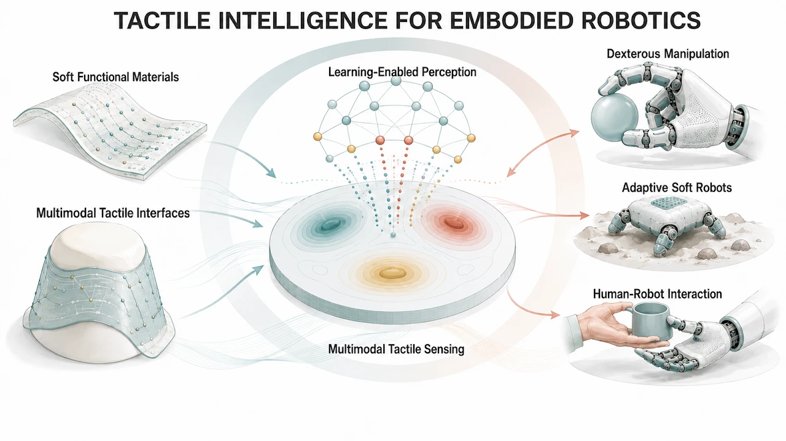

Tactile Intelligence for Embodied Robotics
I develop soft multimodal sensors and electronic skins, study the mechanics and transduction behind them, and integrate them with learning-based tactile perception for dexterous manipulation and human–robot interaction.
My work spans force–temperature decoupling, optical and magnetic tactile interfaces, wearable human–machine interfaces, and miniature soft robots. I aim to build embodied systems that can interpret physical contact and adapt their behavior in real time.


Multimodal Tactile Sensing
RoboTac Skin
Force and temperature change together when a robot touches an object, making the two signals difficult to distinguish in a soft sensor.
RoboTac Skin uses separate sensing mechanisms within a soft ionic skin to measure force and temperature independently. The demonstration shows the skin during robotic manipulation and material identification tasks.
Full citation
Yu Feng, Jiankun Li, Cong Wu, Senlin Hou, Yehui Liu, Hui Sun, Meng Chen, Xiaomeng Yang, Ziyi Li, Zhi Li, Guanglie Zhang, Steven Wang, Roy V. Vellaisamy, Xinge Yu, and Wen Jung Li. “Intrinsic Force–Temperature Self-Decoupling Enables Human-like Tactile Sensing in a Soft Ionic Skin.” ACS Nano 20(31), 22195–22214 (2026).
Optical Tactile Sensing
Mechanoluminescent Skin (ML-skin)
ML-skin addresses the challenge of capturing fine contact patterns on a soft surface. It emits light under mechanical stress, and a camera records the resulting pattern to map contact force.
The system supports high-resolution tactile imaging for tasks such as handwriting recognition and force-based human–machine interaction.
Full citation
Yu Feng, Qiaojiao Wang, Yehui Liu, Jiankun Li, Senlin Hou, Xiaomeng Yang, Ziyi Li, Yanji Yi, Meng Chen, Guanglie Zhang, Hao Sun, and Wen Jung Li. “A Soft Mechanoluminescent Skin for High-Resolution Optical Tactile Sensing in Human–Machine Interaction.” Advanced Science 13(42), e75507 (2026).
Magnetic Tactile Sensing
Magnetociliary Tactile Sensor (MC-Tac)
Direction matters during manipulation and assembly, when sideways contact can guide how a robot adjusts its motion.
MC-Tac uses soft magnetic cilia inspired by fine skin hairs to sense normal force and distinguish the direction of tangential contact. The demonstration shows the sensor during a robotic ring-placement task.
Full citation
Yu Feng, Yuzhao Zhang, Yehui Liu, Guanglie Zhang, Xinge Yu, Jianshu Zhou, and Wen Jung Li. “A Bioinspired Soft Magnetociliary Tactile Sensor for Direction-Sensitive Interaction Sensing.” IEEE Transactions on Instrumentation and Measurement 75, 9531313 (2026).
Wearable and Human–Machine Interfaces
Electronic Slime (E-slime)
Skin-mounted electronics need to conform to the body and remain functional as it moves. E-slime is an amoeba-inspired, deformable and self-healing conductive material that forms wearable electronics directly on the skin.
It can be shaped in place to detect body motion and physiological signals. The demonstration shows the material applied directly to the hand.
Full citation
Yu Feng, Cong Wu, Meng Chen, Hui Sun, Arul Lenus Roy Vellaisamy, Walid A. Daoud, Xinge Yu, Guanglie Zhang, and Wen Jung Li. “Amoeba-Inspired Self-Healing Electronic Slime for Adaptable, Durable Epidermal Wearable Electronics.” Advanced Functional Materials 34(37), 2402393 (2024).